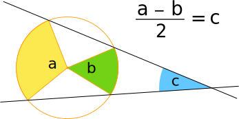
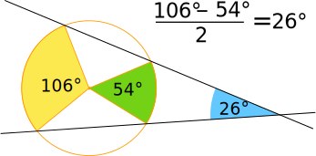
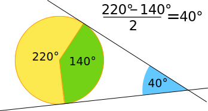

Angle of Intersecting Secants
This is the idea (a,b and c are angles):

And here it is with some actual values:

In words: the angle made by two secants (a line that cuts a circle at two points) that intersect outside the circle is half of the furthest arc minus the nearest arc.
Why not try drawing one yourself, measure it using a protractor,
and see what you get?
It also works when either line is a tangent (a line that just touches a circle at one point). Here we see the "both are tangents" case:

That's it! You know it now.
But How Come?
Is this magic?
Well, we can prove it if you want:
AC and BD are two secants that intersect at the point P outside the circle. What is the relationship between the angle CPD and the arcs AB and CD?

We start by saying that the angle subtended by arc CD at O is 2θ and the arc subtended by arc AB at O is 2Φ
By the Angle at the Center Theorem:
∠DAC = ∠DBC = θ and ∠ADB = ∠ACB = Φ
And PAC is 180°, so:
∠DAP = 180° − θ
Now use angles of a triangle add to 180° in triangle APD:
∠CPD = 180° − (∠DAP + ∠ADP)
∠CPD = 180° − (180° − θ + Φ) = θ − Φ
∠CPD = θ − Φ
∠CPD = ½(2θ − 2Φ)
Done!